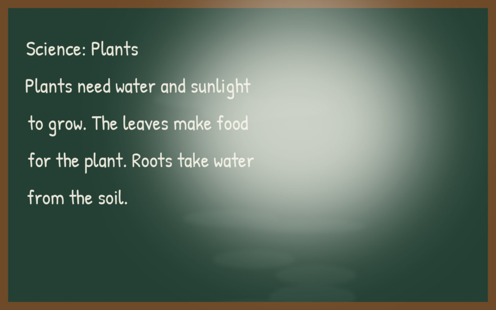
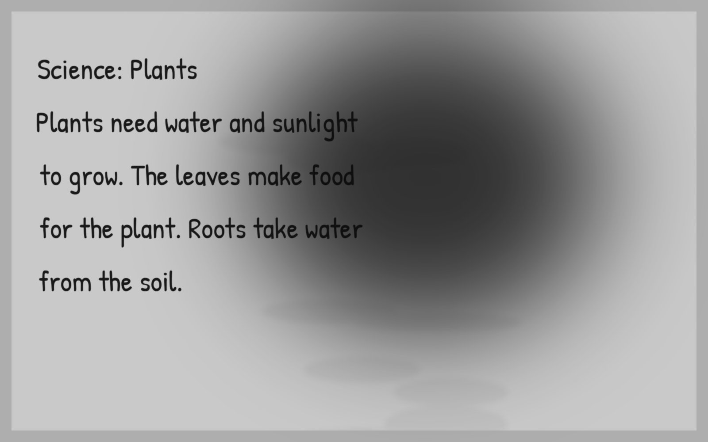
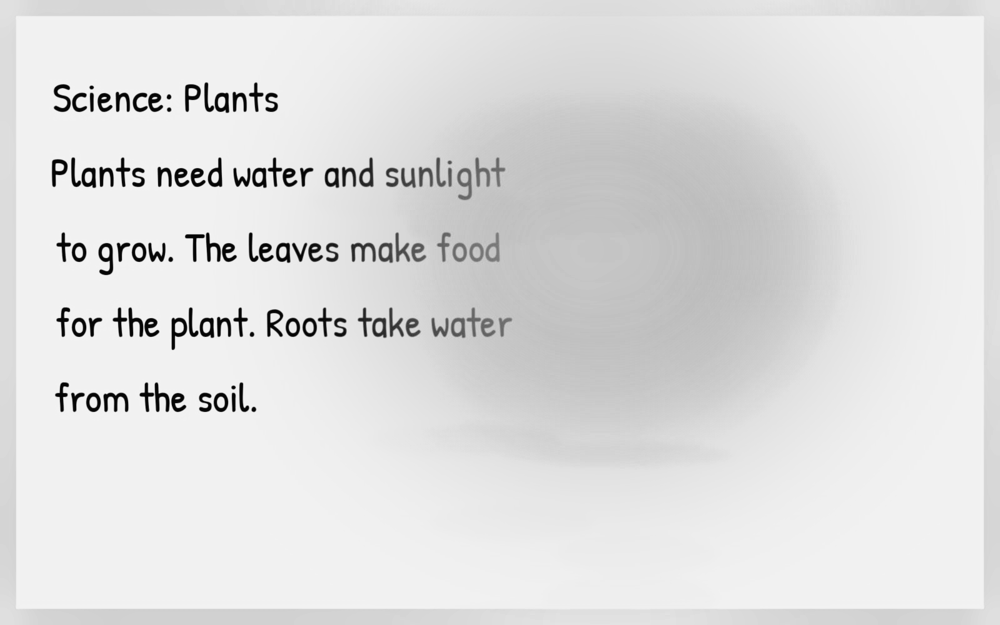
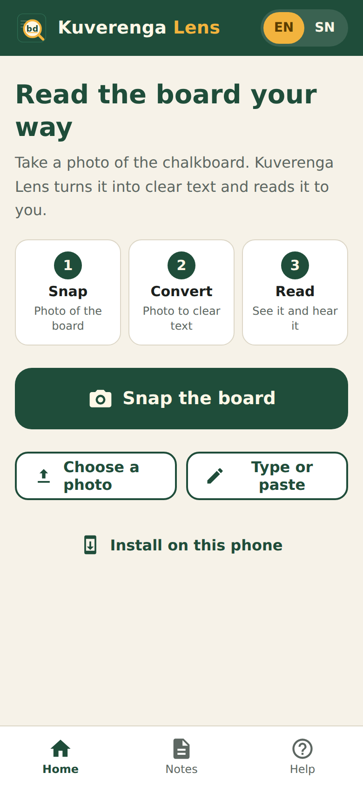
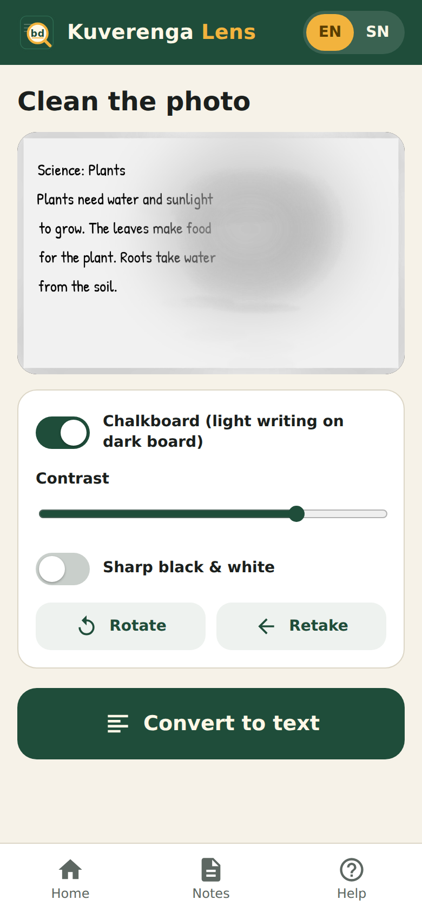
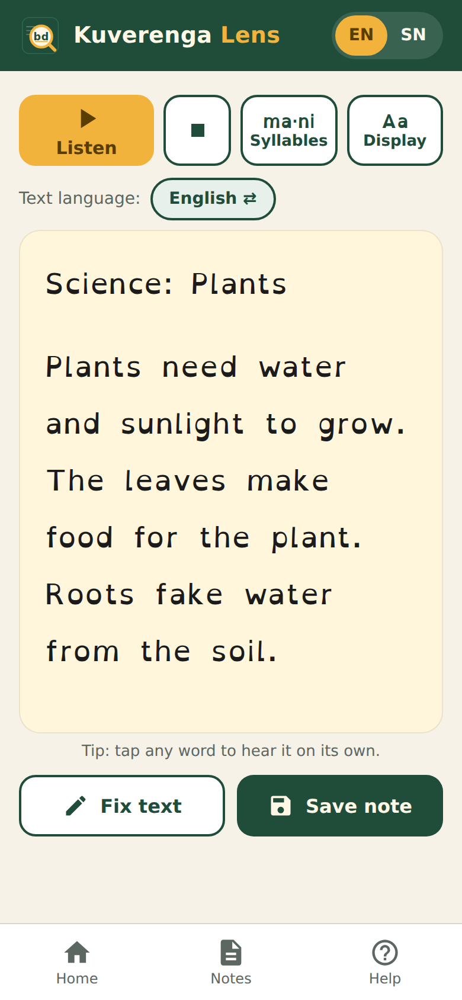
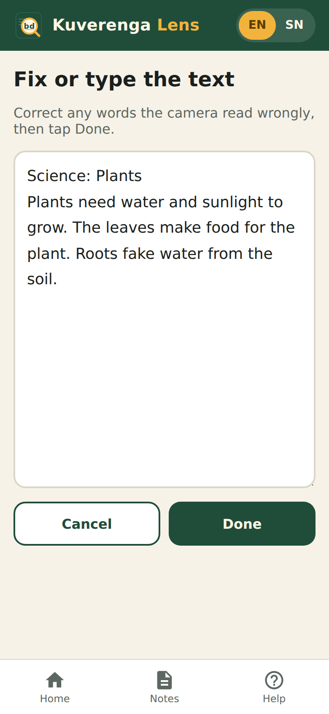
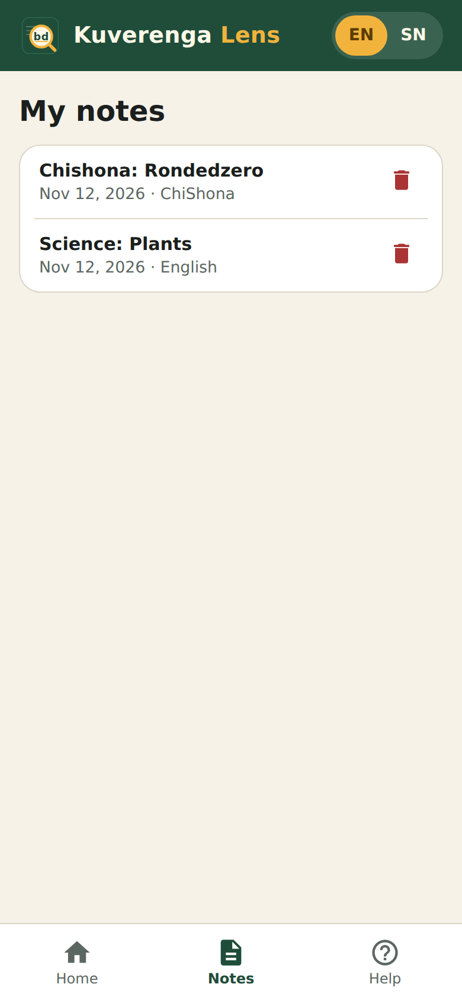

Three steps on the learner's phone. Nothing is uploaded, and it works without internet.
The learner points the phone at the board and takes a picture.
The app cleans the photo and turns it into clear text.
The text is shown in a dyslexia-friendly style and read aloud.
Dual language: every screen, the syllable rules and the reading voice work in English and ChiShona.
An installable web app (PWA). Every part runs inside the phone's browser, so no Play Store and no server are needed.
HTML file input with capture opens the phone camera.
index.htmlGrey → invert chalkboard → flatten glare (background subtraction) → optional black & white.
Canvas · app.jsTesseract.js (WebAssembly) with the English model; also reads ChiShona letters.
vendor/tesseractDrops smudge lines, joins wrapped lines, marks low-confidence words.
app.jsOpenDyslexic, spacing, colours, focus line, syllable breaker (Shona & English).
syllables.jsPhone's text-to-speech voices, sentence highlighting, tap a word to hear it.
Web Speech APIStored only on the phone (local storage). Nothing is uploaded.
The service worker keeps the app, the OCR engine (about 11 MB) and the font so it works with no data.
All labels, syllable rules and voice choice switch between English and ChiShona.
Used once to download and install. An APK can also be built with PWABuilder and shared by WhatsApp.
An engineering design cycle. Testing showed a weakness in v1, which led to v2.
Learners with dyslexia struggle to copy notes from the chalkboard before it is rubbed off.
›Dyslexia, reading supports, OCR, offline apps; questionnaires for learners and teachers.
›Must run on a cheap phone, work offline, avoid the Play Store, and support Shona and English.
›Snap → Convert → Read; large buttons; reading tools chosen from the research.
Camera, contrast stretch, Tesseract OCR, reader, read-aloud, notes.
›14 board photos in 7 conditions. Blur and dust fell to 49% and 27%.
›Replaced the contrast stretch with glare flattening; added a junk filter and doubtful-word marks.
›Average accuracy rose from 76% (v1) to 99% (v2). Next: trial with learners.
A real run of the app on the "window glare" test photo.

Light chalk on a dark board, with glare from a window.

Chalk becomes dark text, but the glare becomes a dark cloud.

The background is estimated and removed, so the glare disappears.
Text from the OCR in the reader. One word is wrong ("fake"), which the learner can fix.
The path a learner takes through the app (real screenshots).

Snap the board, choose a photo or type

Chalkboard mode, glare removal, rotate

Listen, Syllables, Display tools

Correct any misread word

Saved on the phone for revision